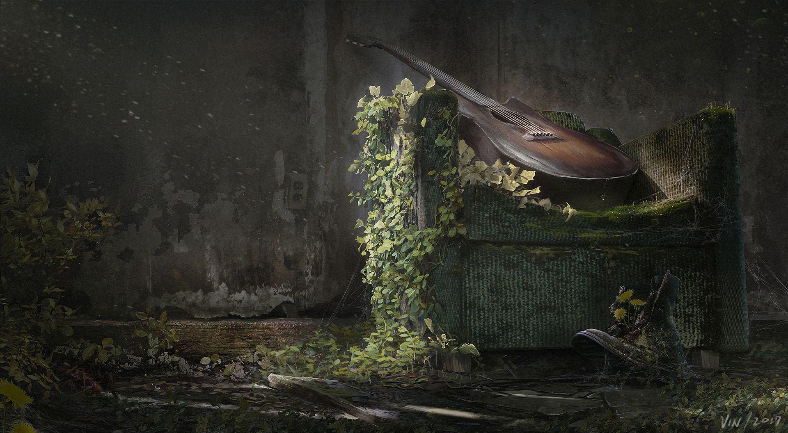

GALERÍA



Un mundo devastado por una pandemia causada por el hongo Cordyceps . La historia sigue a Joel, un contrabandista, y a Ellie, una niña inmune al virus, quienes intentan sobrevivir en un país lleno de infectados y bandas de supervivientes. Cuestionando la moralidad y el sacrificio en un mundo sin esperanza.
Con la mutación del hongo Cordyceps comienza a infectar cerebros humanos y provoca el colapso total de la sociedad. En medio del caos de la primera noche del brote, Joel intenta huir con su hija Sarah, pero ella muere durante la evacuación militar. Aunque el foco del inicio es la pandemia, esta pérdida personal es lo que destruye emocionalmente a Joel y define quién será durante el resto del juego.
20 años después del brote, surge un grupo rebelde llamado Las Luciérnagas, una facción que lucha contra el régimen militar y busca restaurar la sociedad. Ellie se convierte en su mayor esperanza, porque es inmune al Cordyceps: fue mordida, pero no se infectó. Para las Luciérnagas, ella podría ser la clave para crear una vacuna, lo cual salvaria a la humanidad. Para eso, Joel fue contratado para llevar a Ellie a un hospital de Las Luciérnagas en Salt Lake City.
Joel y Ellie forman su vínculo a lo largo del viaje al verse obligados a sobrevivir juntos, pasando de una relación fría y distante a una conexión profunda basada en la confianza. Ellie rompe poco a poco las barreras emocionales de Joel, él empieza a verla como algo más que una responsabilidad, comparten heridas del pasado y se acompañan en momentos decisivos, lo que transforma su relación en un lazo casi de padre e hija
Al llegar al laboratorio Joel descubre que las Luciérnagas planean operar a Ellie aun sabiendo que la cirugía la matará, no lo acepta porque Ellie se ha convertido en la única persona que le queda y a la que no está dispuesto a perder. Para él, Ellie ya no es “la cura” ni un objetivo: es familia. Joel decide impedir la operación y sacarla del hospital. Después, le oculta la verdad para protegerla de la carga emocional de saber que sacrificó a la humanidad por ella.
Contrabandista endurecido por la pérdida, encuentra una nueva razón para vivir.
Joven valiente con inmunidad al virus, representa la esperanza de la humanidad.
Socia de Joel, pragmática y decidida en un mundo sin piedad.
Superviviente solitario que se convierte en aliado y compañero de Ellie.
Hermano menor de Joel, ex-militar que busca redención en un asentamiento pacífico.
Líder de los Luciérnagas, una facción rebelde que busca una cura para la infección.
© 2026 The Last of Us - Naughty Dog
Desarrollado por Melisa Rivas